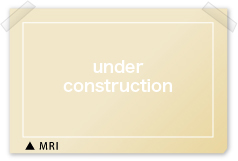
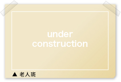
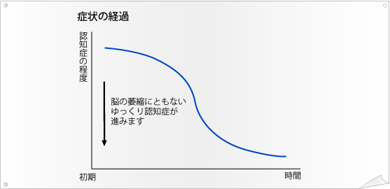

脳萎縮性・脳変性による認知症
脳の神経細胞が変性・死滅し、脳は萎縮して認知症が生じてくる病気です
アルツハイマー
Alzheimer's disease; AD
発祥する年代
40歳から90歳までの間に発症し 75歳になると10%、85歳では25歳前後がかかります。
原因
・脳にβアミロイドタンパク質からなるシミ状の老人班が出現し、変化した神経線維の束が見られるようになります。
これらが、脳全体に蓄積して神経毒性となり 正常な脳神経細胞を脱落させて 脳萎縮を進行させると考えられています。
根拠
テキストテキストテキストテキストテキストテキストテキストテキストテキストテキストテキストテキストテキストテキストテキストテキストテキストテキスト

|